Errors happen. It’s how we deal with them that matters. IntelliJ IDEA has a number of instruments that help to eliminate the errors before and after the compilation and keep your code healthy.
Some errors are easier to catch, and you can handle them in the editor. Others can reveal themselves only when you run the program, so the debugger tool should be your weapon of choice in this case.
Correct your work-in-progress files
The IntelliJ IDEA code editor analyzes your code as you are writing it. It finds potential problems and inconsistencies on the fly and displays their number and severity in the Inspections widget located in the top-right corner of the editor.
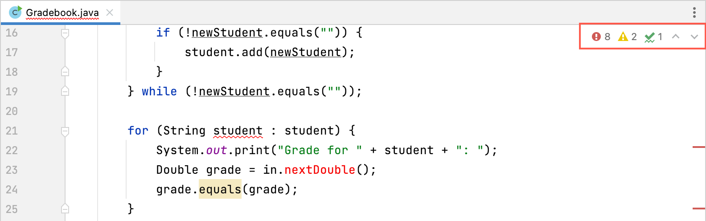Navigate through the problems
Before we fix an actual error, let’s look into some basics of the code inspection. There are several ways to move through the problems in your file. The one you choose may depend on how many lines you have in your file, or you can go with your personal preference.
Using the Inspections widget
To begin with, you can use the Up and Down arrows within the Inspections widget or press the F2 and ⇧F2 keys.
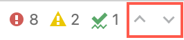When you use one of these controls, the caret moves before the element with a problem, and a tooltip displays the problem description and the possible solutions.
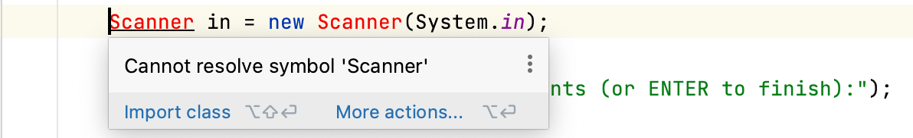After the tooltip, the editor also displays the light bulb icon on the line with the problem that is currently in focus. Hover over this icon and select the down arrow next to it to view the suggested quick fixes and select one.
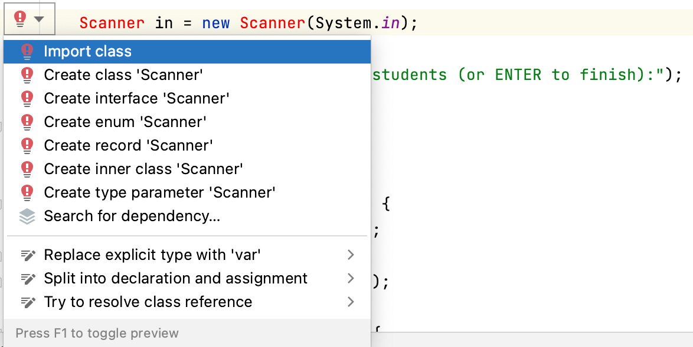.By default, the IDE changes the focus according to the problem severity: first, it jumps to errors, then warnings > weak warnings > server problems > typos. You can change this rule in the Inspections widget settings and view the problems one by one, regardless of their severity. Hover the mouse over the widget in the top-right corner of the editor, click 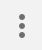, highlight 'Next Error' Action (F2) Goes Through, and select All Problems.
Using the Color Stripes
Another way to navigate through the problems in the editor is using the color stripes in the scrollbar. You can understand the severity of the problem by the stripe color.
When you hover over a stripe, a tooltip displays the selected problem description, and you can click the stripe to jump to the line with the problem right away.
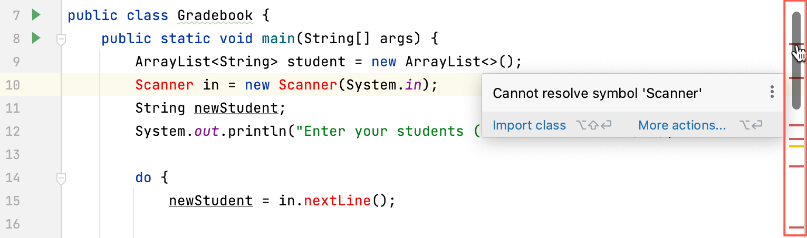If multiple problems are near each other, the tooltip appearance changes to display them in line with the code.
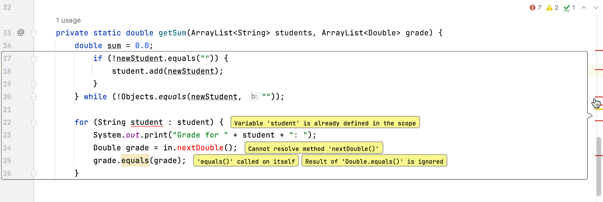Using the Problems window
One more way is to simply click the Inspections widget in the top-right corner of the editor. This opens the Problems window, where you can see the summary of all problems and address each individually.
Before you begin working on the problems, you can use the button in the toolbar to customize the types of problems to show and their sort order.

Right-click a problem description to view what you can do with it. You have a few options: Show Quick Fixes, Copy Problem Description, for example, to share it with someone else, Jump to Source to review and adjust the code in the editor, or have the tool Show Error Details.
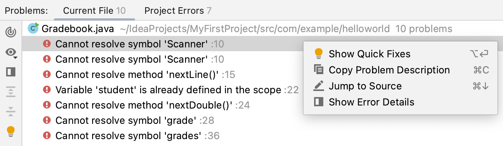You can also access the quick fix options from the Problems window toolbar by clicking or by pressing ⌥ ↵.
One more way to speed up the edits is to open the code editor preview using its button on the toolbar. It lets you select a problem, review the referring line, and correct it right within the Problems window.
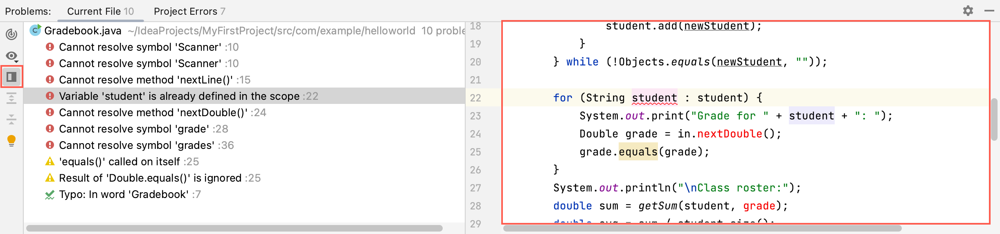Fix an error
As an example, let’s fix a simple syntax error.
class HelloWorld(){
public static void main(String[] args){
System.out.println("Hello, World");
}
}Your professional eye must have spotted it right away, but why don’t we give the code analyzer a chance?
- Click the Inspections widget in the top-right corner of the editor.
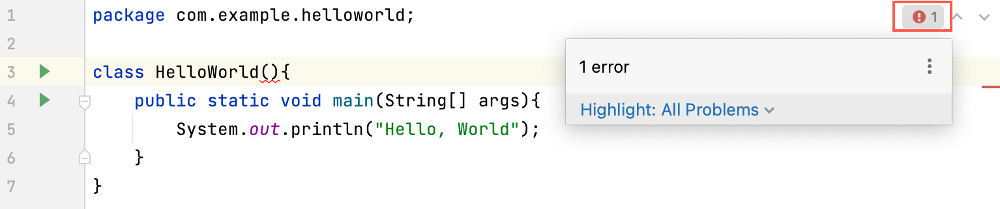
- The Problems tool window displays the error description. Let’s try a quick fix. Right-click the error and select Show Quick Fixes.
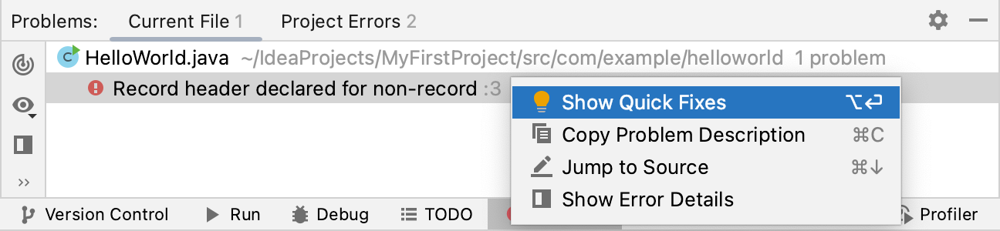
- The tool suggests that you should remove an obsolete element and highlights it in the editor. Select Remove Element.
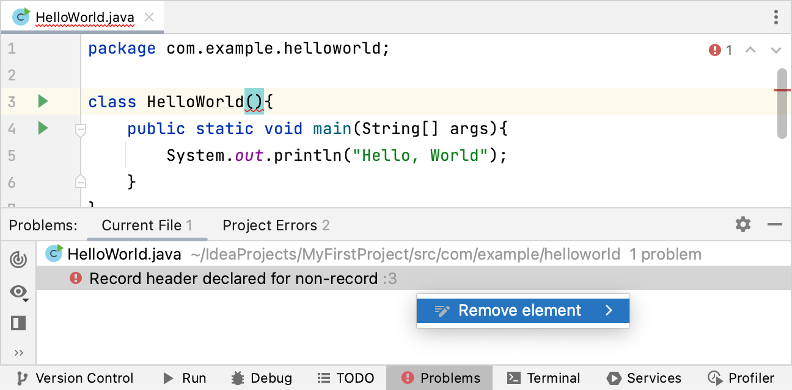
Your code is now free of errors.
Debug your Java programs
While code inspections help to make the best of your code before you run it, some errors aren’t just part of their scope. Certain anomalies may hide deeply in the code and cause your program to behave incorrectly or even run into an exception.
Well, that’s absolutely fine, and it just means that it’s time to roll up your sleeves and do some debugging. But how do you do it? Most developers would find it hard to scan through lots of code lines with the naked eye in search of what causes the problem.
The IntelliJ IDEA’s debugger has it all set for you. It lets you create a breakpoint on the code line where you suspect an error to pause the code execution at it. This way, you can step through the program and look into its internal operations. When you find the issue, you can adjust and reload parts of your code without terminating the session.
Let’s see how to tackle a code issue with the help of the debugger.
Detect possible errors
For example, you have a small program designed to calculate the average grade that students get for an exam.
public class Gradebook {
public static void main(String[] args) {
ArrayList students = new ArrayList<>();
ArrayList grades = new ArrayList<>();
Scanner in = new Scanner(System.in);
String newStudent;
System.out.println("Enter your students (or ENTER to finish):");
do {
newStudent = in.nextLine();
if (!newStudent.equals("")) {
students.add(newStudent);
}
} while (!newStudent.equals(""));
for (String student : students) {
System.out.print("Grade for " + student + ": ");
Double grade = in.nextDouble();
grades.add(grade);
}
System.out.println("\nClass roster:");
double sum = getSum(students, grades);
double avg = sum / students.size();
System.out.println("Average grade: " + avg);
}
private static double getSum(ArrayList students, ArrayList grades) {
double sum = 0.0;
for (int i = 0; i < students.size(); i++) {
System.out.println(students.get(i) + " (" + grades.get(i) + ")");
sum = grades.get(i);
}
return sum;
}
}
When you run it and provide the necessary details, it displays the following result:
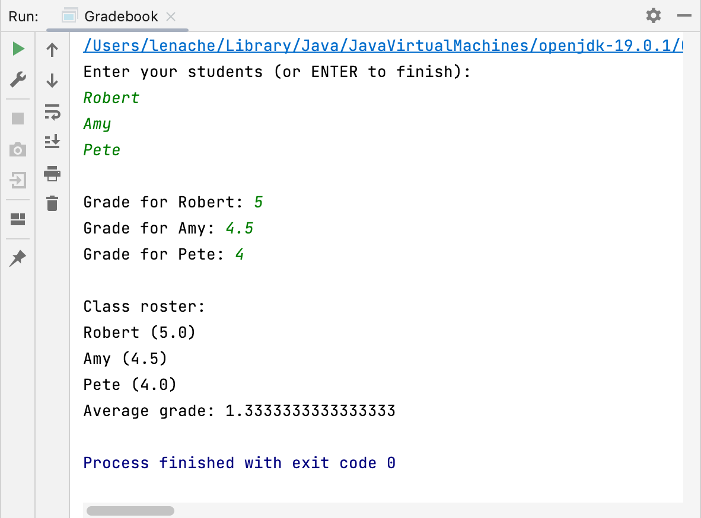The code seems to work, but it’s obvious that the resulting average value is not what you would expect from the provided input. You can assume that some logic error causes your program to calculate the output incorrectly. On the top of that, the error hides within the part of the code which includes the calculation rules.
System.out.println("\nClass roster:");
double sum = getSum(students, grades);
double avg = sum / students.size();
System.out.println("Average grade: " + avg);
}
private static double getSum(ArrayList students, ArrayList grades) {
double sum = 0.0;
for (int i = 0; i < students.size(); i++) {
System.out.println(students.get(i) + " (" + grades.get(i) + ")");
sum = grades.get(i);
}
return sum;
}
}
Set a breakpoint and run the program in debug mode
Now that you know where to look, you can set a breakpoint to suspend the program execution before the part in question and inspect its behavior in debug mode.
- To set a breakpoint, click the gutter on the line where you want to suspend the execution.
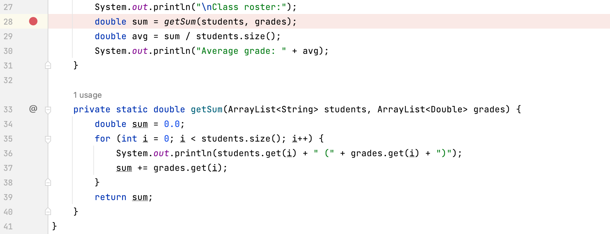
- Click the Run icon in the gutter next to the main method and select Debug.
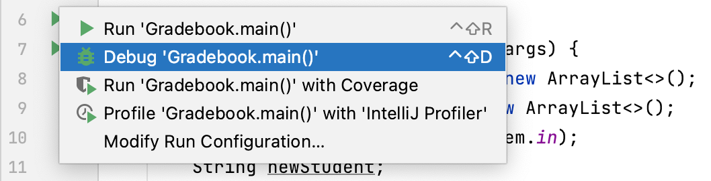
- Provide the required input values in the Console view.
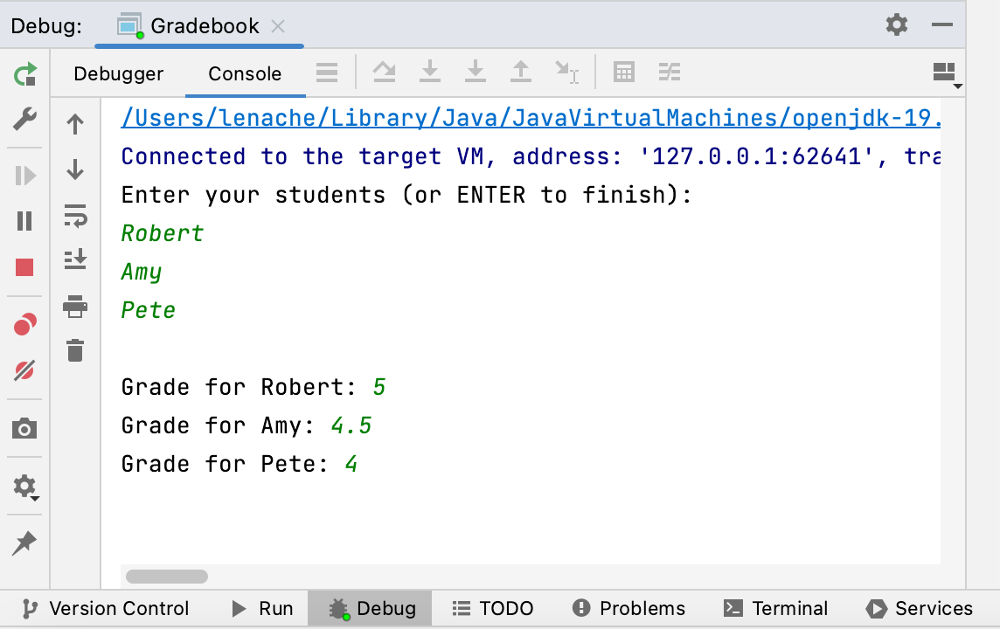
- Press ↵ to proceed with the code execution.
Analyze the program state
The execution process runs normally until it reaches the line with the breakpoint. Then, the process gets suspended and the Debug window displays the variables that hold the program state at this point.
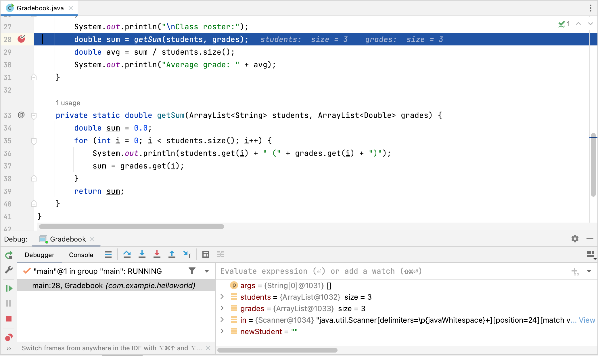The summary of the getSum method parameters displays on the line where the execution paused. You can select the down arrow next to each parameter to view its details.
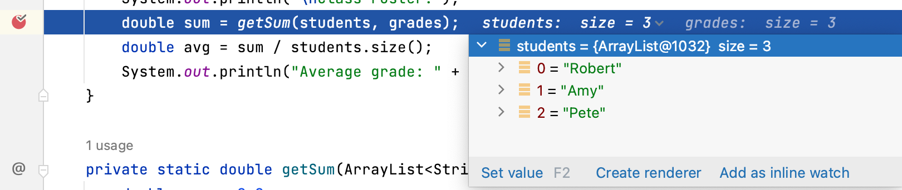You can also inspect the program variables in the Debug window. The debugger has not called the getSum method, so its local variables like sum do not display yet.
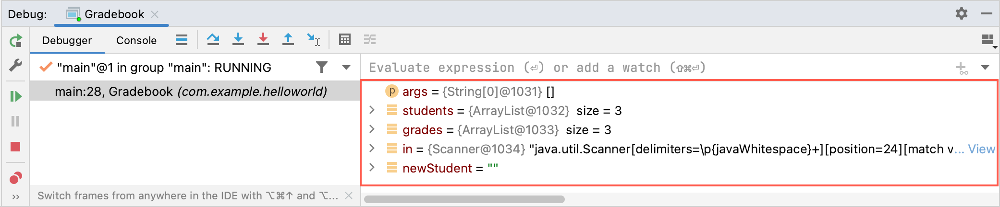Step through the program
Now you can examine the getSum method by running your code step by step. This way, you see how the method variables change with every iteration of the loop.
- On the Debug window toolbar, click Step Into or press F7.
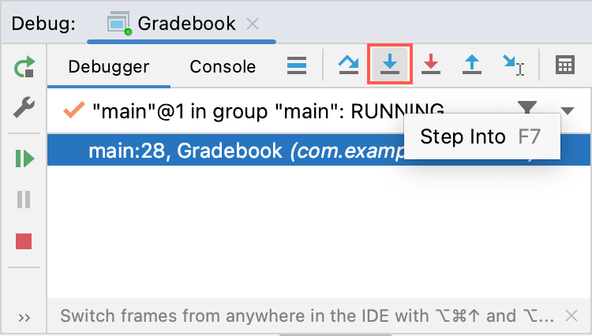
You step into the method in question, so the execution point moves into the method declaration.
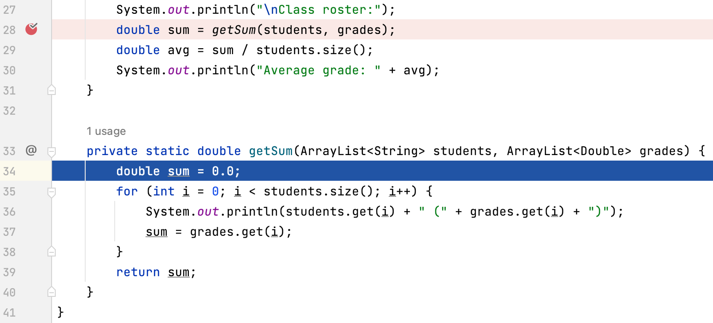You can also notice that the Debug window displays the active method’s frame. Frames store the local variables of the called method, its arguments, and the code context that enables expression evaluation.
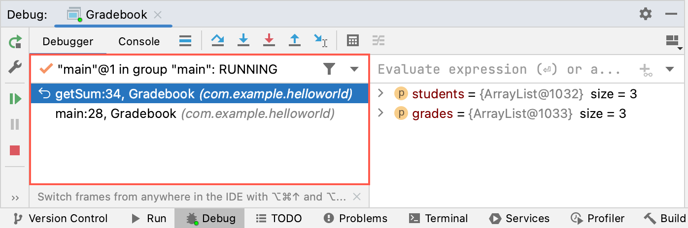 - Now you can move through the method to see how the variables change with every loop. You don’t need to step into any other methods within getSum to do it, so you click Step Over on the toolbar or press F8 to go to the next line.
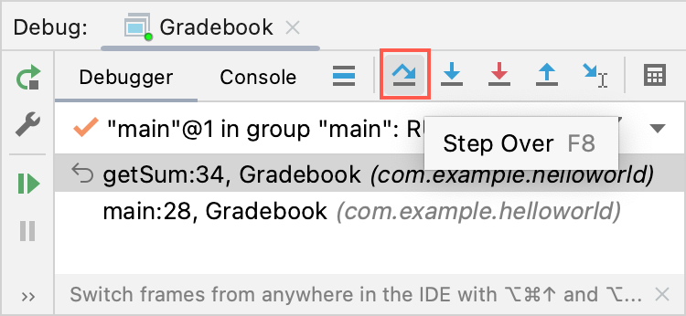
- Notice that the sum variable displays in the Debug window, and it equals to 0.0 because the other variables have not come into play yet.
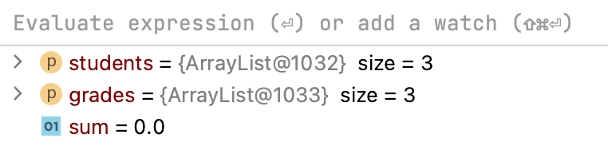
- Keep stepping over till you complete the first iteration. You can see that the sum variable now displays the grade of the first student.
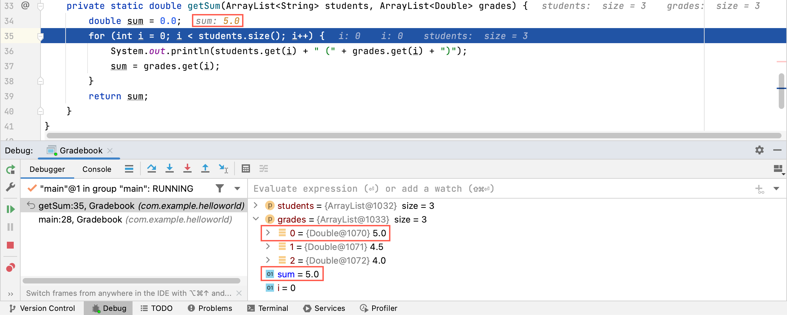
- Continue stepping over to complete the second iteration and review the sum value again. It shows the unexpected result of 4.5, which is the grade of the second student.
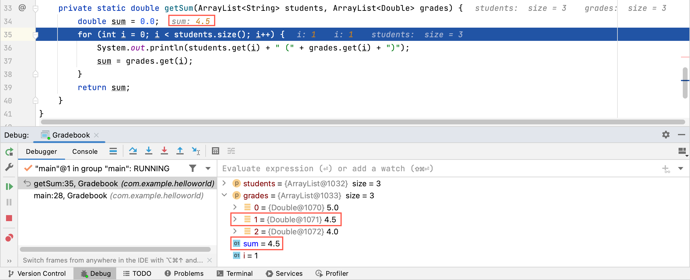
- You can now see that the sum calculation does not work correctly. It uses the = operator instead of +=, so the sum displays the last entered value instead of incrementing it. Let’s correct the error:
sum += grades.get(i)
- Now click Stop on the Debug window toolbar or press ⌘F2 to exit the debugging session.
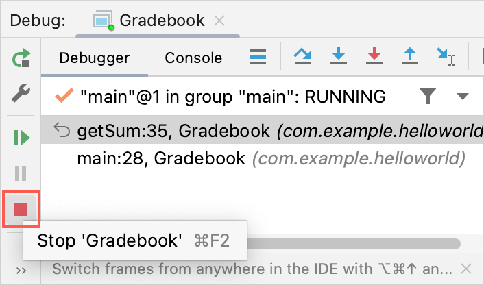
Rerun the program
After you complete the debugging, rerun the program to validate your corrections.
- Click the Run icon in the gutter next to the main method and select Run.
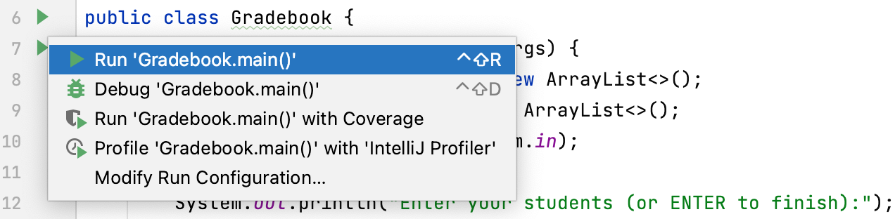
- Provide the required input values in the Console view and press ↵ to proceed.
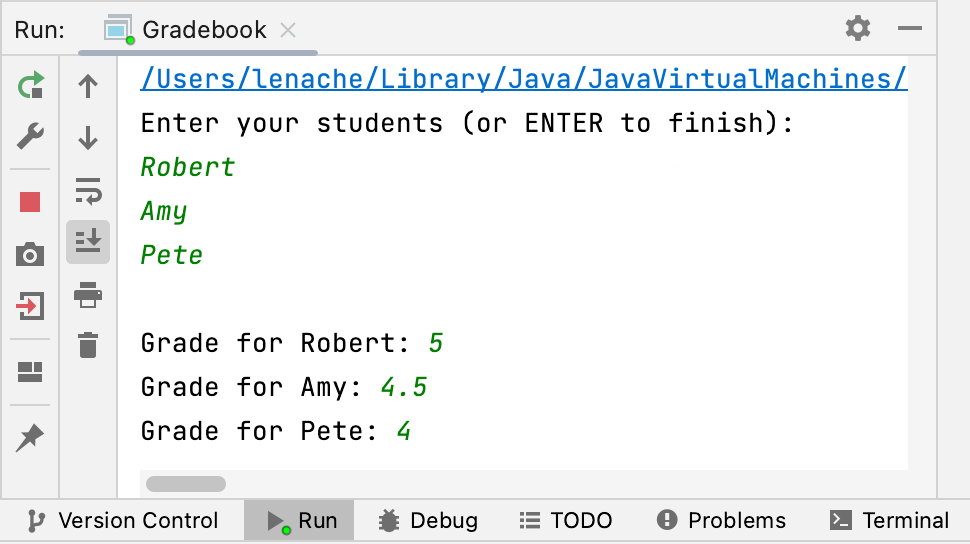
- Review the resulting output. The program now calculates the average grade correctly.
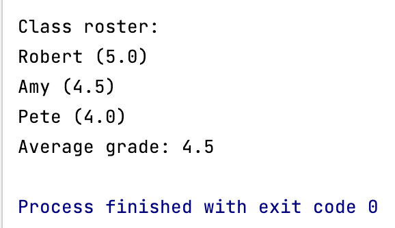
Credits
Developed in IntelliJ IDEA.
Base template: https://github.com/charlyllo/doctemplate.